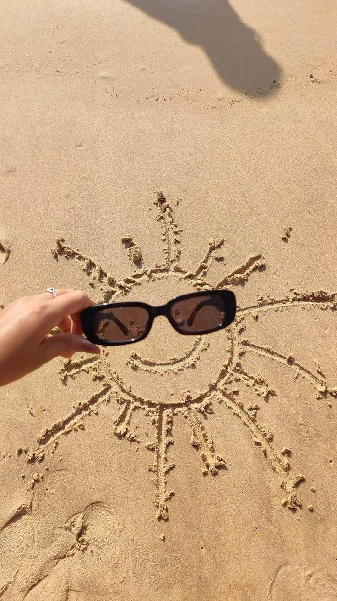

Ljeto, godišnje doba između proljeća i jeseni koje na sjevernoj Zemljinoj polutki počinje ljetnim suncostajem oko 22. lipnja, a završava jesenskom ravnodnevicom oko 23. rujna, ovisno o prijestupnim godinama. Tijekom ljeta Sunčeve zrake obasjavaju okomito površinu Zemlje, i to sukcesivno na zemljopisnim širinama od sjeverne obratnice do ekvatora. Na južnoj polutki ljeto traje za vrijeme zime na sjevernoj polutki, a kraće je za nekoliko dana od ljeta na sjevernoj polutki, jer je u to doba godine Zemlja u perihelu i brže se giba oko Sunca.
Summer or summertime is the hottest and brightest of the four temperate seasons, occurring after spring and before autumn. At or centred on the summer solstice, daylight hours are the longest and darkness hours are the shortest, with day length decreasing as the season progresses after the solstice.
Link na stranicu - Ljeto